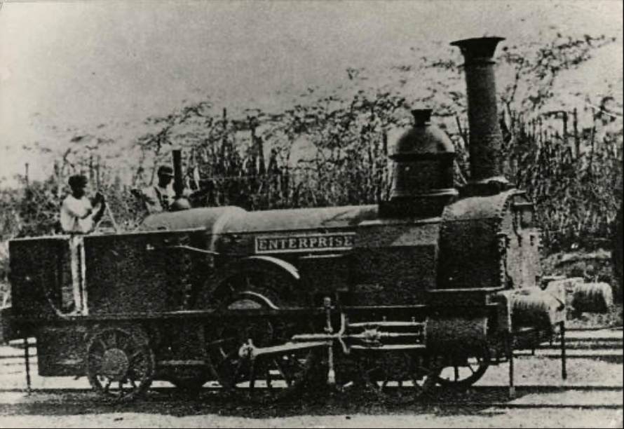
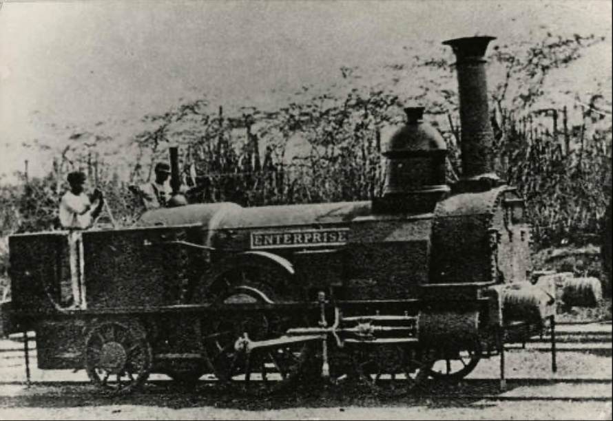
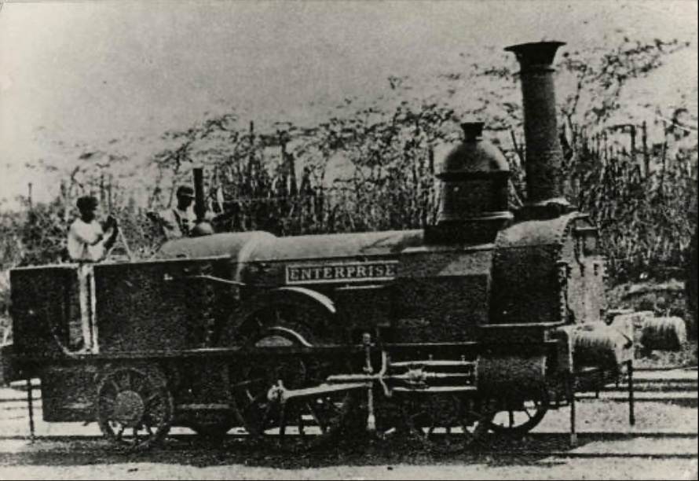

My partner Obi was born in Balaclava, a small town in central Jamaica. Nearby the house, train tracks run through the mountains. The tracks are no longer in use, but they gained a variety of new purposes in the community. Growing up, Obi and his brothers used the tracks to find their way home when the electricity went out. The slats of wood under their feet would function as navigational aid. On the corner by Angie’s shop and Munchie’s bar, the tracks cross the road. At this intersection, a meeting point emerged for people asking drivers for money.
When Obi and I went to Jamaica and visited their grand-aunt, aunt Indi spoke to us about Prince Charles and Diana. It struck me as odd that Indi, an elderly woman living by herself in Balaclava, was concerned with the British monarchy. My partner then pointed out that Indi had grown up in Jamaica under British rule. The island had become an English colony in 1665, captured by the English Protectorate of the Spanish Empire. Under a variety of designations, the British continued to wield authority over Jamaica until 1962 . Jamaica remains part of the Commonwealth today.
The obsolete train tracks that run through Balaclava are one of the many marks the British left on the island. Many remnants of colonisation are cultural and thus indirect, such as aunt Indi being concerned with the British monarchy. Jamaica’s economy, customs, language and other cultural expressions have all been affected by British colonisation, but none of these marks are tangible. The obsolete train tracks sparked an interest in me because they are, distinguishable on the landscape like scars left on the soil. The train tracks visibly interfere with the present as they are a tangible remnant of the past. In this text I question the ways in which the tracks continue to shape Jamaica today, what collective memory they represent and whether there is a way to subvert the meanings they carry.
As I was born in the Netherlands, I lack the first-hand experiences living in the vicinity of Jamaican train tracks that my partner and aunt Indi share. I am a white, cis-female Dutch resident of Dutch nationality and heritage. As such, I do not have any kind of personal experience associated with growing up in Jamaica and/or in an ex-colonised country. My writing here thus does not contend to reflect objective truth, or any form of “Jamaican sentiment”. Through this text I aim to give shape to a theoretical framework within which Jamaica’s train tracks and their present meaning can be (re)considered. Given my own unfamiliarity with the tracks, the text will serve as a stepping stone to a larger research within which I hope to learn from Jamaicans living around the tracks about their visions.
The routes of Jamaica’s railway network were instrumental in the establishment of political hierarchies on the island. As a colonial intervention on the land, the placement of the railways was decided by and in favour of the British. The reorganisation of infrastructure has been commonly employed as a tool to assert political control. Infrastructure gives shape to new hierarchies by bringing certain points relatively closer to other designated locations, subjugating all that falls between:
“Infrastructure shapes territories and governs the movements and processes within and across them. But infrastructure excludes, contains, and subjugates as much as it includes, moves, or liberates. The effects of infrastructure, therefore, are often multiple, paradoxical, or inconsistent.”
The U.S. Interstate Highway system exemplifies the way infrastructure can exclude and subjugate. Created by President Eisenhower in 1956, it is infamous for its racist political intent. The highways broke up many Black and Brown communities “through intention and indifference” , purposefully going around white neighbourhoods. The plan worked in conjunction with an effort for urban renewal, that aimed to get rid of substandard housing and businesses to replace them with newly developed suburbs. Black neighbourhoods were considered ghettos and were erased in favour of new construction, loans and mortgages for which were available only to white residents due to redlining policies mandated by the government. The routes of the Interstate Highway system created a hierarchy: the system improved access to good housing and efficient transportation for white residents, as it excluded Black and Brown communities.
The Jamaican railway similarly created new hierarchies. The tracks offered significant economic opportunity, causing the towns off the line to lose considerable population and the towns directly bordering or crossed by the tracks to increase in size . The routes and stops had been laid out by the British, primarily benefitting the production and trade of sugarcane. The railways were proposed in 1843 by William and David Smith, respectively an owner of Jamaican land and a sugarcane planter. The tracks were intended to revitalise the sugar plantations and facilitate the establishment of central sugar factories. The proposal as formulated by the Smiths laid out the plan for a double track of roughly 23 kilometres between Kingston and Spanish Town, with branch lines to Angels, Port Henderson and the Caymanas sugar estate.
The railways manifested British colonisation on the landscape through the hierarchies inherent in their infrastructure. The British further asserted their control on the map through the act of naming. The replacement of toponyms is a powerful tool to assert political control, as it erases the memory of previous rule . Jamaica’s landscape as it exists today was mapped and named by the Brits. The names of the towns were adapted from the previous Spanish names and the Arawak names before those. “Spanish Town” had been called “Villa de la Vega” by the Spanish. It had been the capital under their rule, but the English moved the capital to the newly established town of Kingston. Kingston was built on the plain of Liguanea, an area presumed to have been named after green lizards common in Jamaica, now referred to by Jamaicans as “guanas”. The Arawaks had called them “iwanas” and the Spanish “iguanas”. The name most likely originated from the Arawak word, although the naming process of the land is presumed to have first been carried out by the Spanish. The fourteen parishes that make up Jamaica were divided and named by the British in order to facilitate efficient government.
In their essay “Herdenken Herdacht” (2019), writer and philosopher Simon(e) van Saarloos points out that the past is often considered as an afterthought to the present, as if it is a separate entity. Van Saarloos argues that the past is so integral in the present that the two cannot be viewed apart. They propose that the past might be experienced more presently if objects reminiscent of the past, such as Jamaica’s railways, would be “daily aggravations”. They imagine, “I wish the remnants of fallen statues would bar the way or demand a detour” That way the past interferes with the present in more tangible ways and demands more attention.
Jamaica’s public passenger railway service was discontinued in October 1992; the now obsolete train tracks have always remained . I consider these train tracks an embodiment of the kind of interference Van Saarloos describes. The tracks, as a remnant of the past, exist in the present landscape and interfere with daily activities. Where the tracks cross the road, for instance, they demand cars to slow down. I believe it is productive to experience the past as daily aggravation, for its presence not to be overlooked. For to think of the past as a wholly separate entity, is to deny the ways in which it continues to shape the present. Cultural critic bell hooks accurately articulates the importance of remembrance in her 1992 essay ‘Columbus: Gone But Not Forgotten’:
Our indigenous comrades who struggle for freedom in South Africa remind us that “our struggle is also a struggle of memory against forgetting.” To remember is to empower. Even though some memories hurt, we dare to name our grief and pain and the sorrow of our ancestors, (...) we remember to honor them in acts of resistance, to reclaim the sound of their protests and rage, the sound that no history books record. (emphasis added)
I consider the idea of the past as daily aggravation a means to honour and resist the demons of the past still being faced today. It can be a powerful tool in the struggle of memory against forgetting. For the “daily aggravation” to move beyond a memory and become a means of resistance, I would argue that the object needs to be reimagined. Van Saarloos considers the work of collective RAAAF, which introduces the notion of reimagination.
RAAAF argues that the meaning of an object is determined by the interaction it invites, the object’s “affordances”. By altering the affordances of an object, RAAAF reimagines their present meaning. Their project Bunker 599 exemplifies this notion. They removed the middle part of the bunker, creating a hallway of light and exposing its insides. This modification radically changed the affordances of the bunker; it invites increased interaction and urges the passerby to position themselves and the bunker in the present and future. As the jury of the Architectural Review Award pointed out in 2013, “Split Infinity, a bisected pillbox on the bank of a dyke opens a way through the sometimes impenetrable memories of war to a future of broader horizons." (emphasis added) This forward-looking aspect is essential to any form of reimagination. I wonder if Jamaica’s railways could similarly be reimagined and in what ways they might invite a view of the future beyond the memory of colonisation.
The notion of reimagination is grounded in Afrofuturism, a movement proposing alternative futures from a Black perspective. Reimagination is the notion of imagining change in the present, making space for alternative futures. This act of imagination challenges and subverts dominant narratives and power structures and as such it is an act of resistance. Historian and writer Robin D.G. Kelley writes about the urgency of imagination in his book ‘Freedom Dreams’. He explains that the imagination of alternative futures is crucial to any transformative struggle, for “without new visions we don’t know what to build, only what to knock down.”
Progressive social movements do not simply produce statistics and narratives of oppression; rather, the best ones do what great poetry always does: transport us to another place, compel us to relive horrors and, more importantly, enable us to imagine a new society. (...) It is that imagination, that effort to see the future in the present, that I shall call ‘poetry’ or ‘poetic knowledge’.
When watching ‘Chef’s Table’ , I was met with a striking example of reimagination. Chef Mashama Bailey talks about the history of her restaurant, The Grey. The restaurant is housed in a former Jim Crow segregated bus station in Savannah, Georgia. Bailey recalls that when she first entered the abandoned bus station, there was a sign still hanging in the back that read “Colored Waiting Room”. Bailey, a Black woman who grew up in Savannah, imagined how her ancestors must have been obliged to sit in that waiting room. I consider the bus station as a landmark analogous to Jamaica’s railways; both embody a larger theme of the past (respectively Jim Crow segregation and colonialist rule) that still reverberates today.
When Bailey and her business partner made the bus station into a restaurant focused on Black southern cuisine, they reimagined the bus station and its meaning to the community. They did not attempt to erase its history, but rather changed its affordances. The Grey “evokes the spirit of the past”, as cultural commentator Osayi Endolyn points out. In her words, “What the Grey does is it says, ‘We have this past, we have this history, and here is where we’re going.’ It’s a forward-moving conversation.” The Grey opens a way to a future of broader horizons. I consider the Grey an act of resistance to dominant narratives and power structures, the exemplification of “poetic knowledge” as described by Kelly. In the act of transforming the bus station into a restaurant highlighting Black cuisine, Bailey resists the present echoes of Jim Crow segregation. This example resonates with me, because it seems relatively simple, yet it demonstrates so clearly how meanings can be changed to take control of the narrative for the future. I believe reimagination as demonstrated by Bailey could similarly be applied to the railways, following from the imaginations and needs of people who live in their vicinity.
Akin to the notion of reimagination is Saidiya Hartman’s concept of critical fabulation. Instead of focusing on the (re)imagination of the present or future, critical fabulation focuses on imagination as it pertains to the past. Hartman, a writer and Professor of African-American literature at Columbia University, first formulated this notion in her 2008 essay “Venus in Two Acts” . Her development of critical fabulation stemmed from the frustration that archival materials are generally limited to the perspective of the ruling classes, causing them to be filled with “countless gaps and omissions, especially as it related [sic] to the lives of enslaved people.” This is true too for the archives on Jamaica’s railways; the authors of archival materials on Jamaica’s railways are most commonly British.
The methodology of combining historical archival research with critical theory and fictional narrative in order to fill these gaps in the archive is what Hartman calls ‘critical fabulation’. In “Venus in Two Acts”, she concerns herself with Venus. Hartman had written about an enslaved Black girl who died aboard a slave ship called the ‘Recovery’ in her 2007 book “Lose Your Mother”. There were, however, two girls who had died aboard that ship, both at the hands of Captain John Kimber. During the “Trial of Captain John Kimber for the Murder of a Negro Girl”, the ‘other girl’ he had murdered was briefly mentioned.
Q Was there not a girl of the name of Venus? A There was. Q Was she not in the same state? A Not that I know of.
In “Lose Your Mother” Hartman writes no more than two sentences about the other girl. It is her reproduction of silence surrounding Venus’ death in “Lose Your Mother” that makes Hartman revisit Venus. In “Venus in Two Acts” she then imagines her as being emblematic of all women who were enslaved in the Atlantic world:
One cannot ask, “Who is Venus?” because it would be impossible to answer such a question. There are hundreds of thousands of other girls who share her circumstances and these circumstances have generated few stories. And the stories that exist are not about them, but rather about the violence, excess, mendacity, and reason that seized hold of their lives (...) The archive is, in this case, a death sentence, a tomb, a display of the violated body, an inventory of property, a medical treatise on gonorrhea, a few lines about a whore’s life, an asterisk in the grand narrative of history.
Hartman imagines how the two girls might have been friends and how they might have found comfort in each other. She pictures Venus soothing the girl that died before her, wishing her a good return. Simultaneously, she recognises the impossibility of telling such a story. The intention of critical fabulation is to “paint as full a picture of the lives of the captives as possible,” through the combination of historical research and fictional narrative. By extending her writing beyond the limits of the archive, Hartman remembers the sound that no history books record.
The limitations of the archive that Hartman points out persist throughout history. The story of Jamaica’s railways is no different. I consider the Jamaicans who laid the tracks, those who worked as conductors and drivers, the Venus to the story of Jamaica’s railways. They might have been mentioned, but scarcely were they the authors of the texts and photos that we now find in the archives. I find it important to acknowledge the limited scope of my archival materials as they were recorded from the British perspective. I believe it is however nonetheless relevant to reproduce this archival knowledge of the train tracks to better understand their place in Jamaica today.
On August 1, 1834 enslaved Jamaicans were formally freed. All enslaved persons over the age of six, however, were subjected to a mandatory six-year period of “apprenticeship” following the formal abolition of slavery in Jamaica. The apprenticeship meant that the ‘previously’ enslaved persons were obliged to work without pay three quarters of the week, for their ‘former’ masters. In exchange they would receive food, clothing and lodging. They could choose to work for pay in the fourth quarter of the week, and eventually use that money to buy themselves freedom. The system of apprenticeship was abolished four years later; full emancipation of enslaved people in Jamaica came on August 1, 1838.
After the full emancipation in 1838, the small-scale domestic production and internal marketing that had developed among enslaved people accelerated. The need to transport goods in this market gave rise to a network of roads that connected Jamaica’s interior to the towns and coastal ports. These roads, however, were in a “deplorable condition”. The movement of goods and people was slow and there was a pressing need for a more efficient method of transport.
The peasants were not alone in their desire for improved transport. The sugar planters predicted it would revitalise their plantations and facilitate the establishment of central sugar factories. In 1843 an owner of Jamaican land and a sugarcane planter submitted a proposal for the railways. It was immediately approved by the Local House of Assembly and the construction of the railways started the same year. The railways were a private endeavour, primarily funded by British merchants and bankers. The widespread enthusiasm for them soon waned, when the plantation economy continued to decline and local capital for railway upkeep and expansion was lacking. The tracks soon became dangerous due to poor maintenance and train services grew irregular.
Sir Anthony Musgrave, a Brit who became governor in 1877, believed that Jamaica’s economy would greatly benefit from well managed train transport. During his governorship the government purchased the railway and ushered in a period of repair, modernisation and expansion.
Transport by rail was cheaper, faster, and more efficient than road transport with pack animals or animal drawn carts. As such, the railways encouraged the diversification of crops, playing an especially important role in the growth of the banana industry. The export requirements for bananas were strict: bananas had to be shipped out within two days and bruised fruits were rejected. Road transport had caused considerable damage to the fruits and was limited in scope. The railways allowed the banana plantations to grow from 10,000 acres in 1891 to 73,000 in 1934. In the same time frame, Jamaica’s coconut, cacao and citrus industries also grew significantly due to rail transport.
Moreover, the railways allowed peasant producers to move larger quantities over longer distances, which bolstered their economic opportunities and resulted in a more balanced supply of food around the island. In addition to the agrarian sector, the railway system benefited commercial, manufacturing and mining industries.
Jamaica’s mountainous geography and tropical climate caused high maintenance costs associated with the railways and frequent need for repairs. The conflict of the economic opportunities the railways offered contrasted by the high costs associated with their maintenance led the railways to change hands between the government and private owners repeatedly. Every change of hands would usher in a period of extension and repair. Over time the funds would run out and the railways would deteriorate until the next change of hands. Finally, the railway company became a statutory corporation in 1960 and was renamed the Jamaica Railway Corporation (JRC). This is the denominator under which the railways still exist today.
When the automobile started to appear in Jamaica in 1930, railways ceased to be the only means of fast and cheap transportation. From 1933, the Jamaican Railway Company rarely earned more than they spent, and losses became the norm by the early 1940s. The JRC heavily relied on loans and subsidies for its continued survival and became a drain on the government’s resources. The maintenance of the tracks was neglected and the first line closed in 1974. By 1992, the public passenger railway service was discontinued altogether.
The railways continued to mark Jamaica’s soil in the years that followed. To many Jamaicans, the tracks aren’t merely remainders of the colonised past, but also of major accidents. My partner told me that a passenger train jumped the rails in their hometown Balaclava in 1938, injuring 70 and killing 32 people. Barely twenty years later, a heavily overpacked train on its way from Kingston to Montego Bay derailed. The disaster left 200 dead and 700 injured. These accidents demonstrate that the tragedies left by the British colonisers were extended through the railway network they established. The railways are a remainder of colonisation, inasmuch as they are reminiscent of its victims.
When I first started thinking about Jamaica’s train tracks I considered them a scar imprinted on the land. Through the writing of this paper I have come to consider an additional perspective, that of the train tracks as memorial. To distinguish these perspectives it is necessary to denote the differences between a ‘scar’ and a ‘memorial’. Both scars and memorials contain an inference to the past. Although it initially seemed to me that only memorials are created with intent, scars are often purposeful too. Purposeful scarification might be done to mark milestones in a person’s life or to signify the tribe they belong to. The train tracks as a scar might also be considered purposeful. I would argue that Britain intended to have a lasting effect on Jamaica, not in the least supported by the fact that Jamaica is still part of the Commonwealth today. The difference between a scar and a memorial is then better defined by the notion of honouring the past.
I believe any memorial is constructed with the intent to honour the past; the same cannot be said for scars. Following RAAAF’s argument that meaning is constructed in interaction, the object of memorial does not need to have been put in place specifically for that purpose; it can become a memorial post factum. In the event of terrorism or murder, flowers are often left at the location of the incident in the days following. Ordinary places —tram stops, pavements, squares— are transformed into memorial sites within hours, through the interaction of the public with the location. These memorial sites are constructed through the intent to honour the victims. As such, they are no less legitimate as memorials than famous monuments like the 9/11 Memorial Pools or the Vietnam Veterans memorial. The railways, I believe, could also be(come) a memorial through their interaction with their surroundings. In their current state, I would consider them an “invisible memorial”.
I propose the “invisible memorial” here as a term for a memory contained in the land. In her book “In the Wake: On Blackness and Being”, Christina Sharpe considers the residence time of blood in water. When 1.8 million enslaved people died in the ocean during their transportation via the Middle Passage, their blood introduced large amounts of sodium into the North Atlantic. This sodium informs the flow of the ocean and has a residence time of 260 million years. Sharpe uses this example to demonstrate that the legacies of slavery and colonialism continue to shape the present. She formulates the notion of “the wake” as the psychic space within which the Black diaspora exists in the aftermath of the historical and continuing violence enacted on Black bodies.
Prof. Paul Gilroy, a pivotal figure in cultural studies, introduced the notion of the ‘Black Atlantic’ in his 1993 book of the same title. This concept is granted increasing depth Sharpe’s formulation of the wake. Black Atlantic culture, according to Gilroy, is not solely African, American, British or Caribbean, but encompasses all of these at once in a way that transcends national borders. All of whom Gilroy includes in his notion of Black Atlantic culture, exist in Sharpe’s wake.
Within Sharpe’s work, the North Atlantic is the embodiment of the historical and continuing violence enacted on Black bodies that reverberates today. I propose to consider the continuing influence of the blood on the ocean’s flow, as described by Sharpe, to be a form of memory. The flow of the North Atlantic remembers the countless people who died there and will continue to do so for 260 million years. This I would call an “invisible memorial”, a memory contained in the land far outlasting any human recollection. The formulation of the ocean as memorial is crucial for it to exist as such. The train tracks are likely to have affected Jamaica’s soil in a manner that resembles the affects on the ocean by the deaths of the enslaved. A study researching a body of railways in Poland has found that “Railway transport is a source of pollution to soils and living organisms” . The study sampled an array of railway basement soils, extracted from the depth of 0-20 cm under the crushed stone from numerous railway stations in north-eastern Poland. It found pollutants (such as heavy metals and oil-derived substances) in all examined soils and varying levels of soil toxicity. The authors conclude that railway transport “may cause potential hazard to the natural environment to a larger degree than hitherto assumed.”
Although no such research appears to have been carried out in Jamaica, it is reasonable to assume that the railways in Jamaica have similarly affected the soil on the island. As such, I would argue that the soil recorded and continues to remember the colonial presence and its emissions as well as repercussions on Jamaican land. The train tracks –or more specifically, the soil they are on– can then be considered an invisible memorial.
Jamaica’s public passenger railways have been obsolete ever since their discontinuation in 1992. The tracks remain and make tangible a memory of Jamaica’s colonial past, symbolising how colonialism reaches far beyond the end of a coloniser’s rule. In this paper I have attempted to place the railways within a framework of thought. I have tied it to concepts such as reimagination and critical fabulation and considered the tracks both as scar and as memorial. Through constant interaction with those in their vicinity, the tracks continue to influence life in Jamaica today. Moreover, the soil the tracks are on remembers the past through the pollutants that have entered it over the years.
I feel this research has provided me with the necessary theoretical background to go to Jamaica and learn from those living around the train tracks about their imaginations for the railways and the role they would like the tracks to have in their lives.
On a corner in Balaclava, between Angie’s shop and Munchie’s bar, the train tracks cross the road. Every time a driver nears the tracks, they slow down, preventing their car from derailing. It is there that the tracks transgress time and space and become the fallen statue, the daily aggravation, that is both physically and psychically in the way, reminding us of the past ever present.
